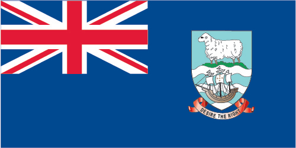
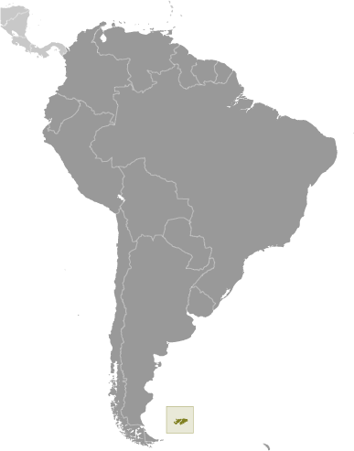

South America :: FALKLAND ISLANDS (ISLAS MALVINAS)
Introduction :: FALKLAND ISLANDS (ISLAS MALVINAS)
-
Although first sighted by an English navigator in 1592, the first landing (English) did not occur until almost a century later in 1690, and the first settlement (French) was not established until 1764. The colony was turned over to Spain two years later and the islands have since been the subject of a territorial dispute, first between Britain and Spain, then between Britain and Argentina. The UK asserted its claim to the islands by establishing a naval garrison there in 1833. Argentina invaded the islands on 2 April 1982. The British responded with an expeditionary force that landed seven weeks later and after fierce fighting forced an Argentine surrender on 14 June 1982. With hostilities ended and Argentine forces withdrawn, UK administration resumed. In response to renewed calls from Argentina for Britain to relinquish control of the islands, a referendum was held in March 2013, which resulted in 99.8% of the population voting to remain a part of the UK.
Geography :: FALKLAND ISLANDS (ISLAS MALVINAS)
-
Southern South America, islands in the South Atlantic Ocean, about 500 km east of southern Argentina51 45 S, 59 00 WSouth Americatotal: 12,173 sq kmland: 12,173 sq kmwater: 0 sq kmnote: includes the two main islands of East and West Falkland and about 200 small islandscountry comparison to the world: 164slightly smaller than Connecticut0 km1,288 kmterritorial sea: 12 nmcontinental shelf: 200 nmexclusive fishing zone: 200 nmcold marine; strong westerly winds, cloudy, humid; rain occurs on more than half of days in year; average annual rainfall is 60 cm in Stanley; occasional snow all year, except in January and February, but typically does not accumulaterocky, hilly, mountainous with some boggy, undulating plainsmean elevation: NAelevation extremes: lowest point: Atlantic Ocean 0 mhighest point: Mount Usborne 705 mfish, squid, wildlife, calcified seaweed, sphagnum mossagricultural land: 92.4%arable land 0%; permanent crops 0%; permanent pasture 92.4%forest: 0%other: 7.6% (2011 est.)NAa very small population, with most residents living in and around Stanleystrong winds persist throughout the yearoverfishing by unlicensed vessels is a problem; reindeer - introduced to the islands in 2001 from South Georgia - are part of a farming effort to produce specialty meat and diversify the islands' economy; this is the only commercial reindeer herd in the world unaffected by the 1986 Chornobyl disasterdeeply indented coast provides good natural harbors; short growing season
People and Society :: FALKLAND ISLANDS (ISLAS MALVINAS)
-
3,198note: data include all persons usually resident in the islands at the time of the 2016 census (2016 est.)country comparison to the world: 229noun: Falkland Islander(s)adjective: Falkland IslandFalkland Islander 48.3%, British 23.1%, St. Helenian 7.5%, Chilean 4.6%, mixed 6%, other 8.5%, unspecified 2% (2016 est.)English 89%, Spanish 7.7%, other 3.3% (2006 est.)Christian 57.1%, other 1.6%, none 35.4%, unspecified 6% (2016 est.)0.01% (2014 est.)country comparison to the world: 19010.9 births/1,000 population (2012 est.)country comparison to the world: 1814.9 deaths/1,000 population (2012 est.)country comparison to the world: 194NAa very small population, with most residents living in and around Stanleyurban population: 77.2% of total population (2017)rate of urbanization: 0.68% annual rate of change (2015-20 est.)STANLEY (capital) 2,000 (2014)total population: 1.11 male(s)/femalenote: sex ratio is somewhat skewed by the high proportion of males at the Royal Air Force station, Mount Pleasant Airport (MPA); excluding MPA, the sex ratio of the total population would be 1.01 (2012 est.)total: NAmale: NAfemale: NAtotal population: 77.9male: 75.6female: 79.6 (2017 est.)NANANANA
Government :: FALKLAND ISLANDS (ISLAS MALVINAS)
-
conventional long form: noneconventional short form: Falkland Islands (Islas Malvinas)etymology: the archipelago takes its name from the Falkland Sound, the strait separating the two main islands; the channel itself was named after the Viscount of Falkland who sponsored an expedition to the islands in 1690; the Spanish name for the archipelago derives from the French "Iles Malouines," the name applied to the islands by French explorer Louis-Antoine de BOUGAINVILLE in 1764overseas territory of the UK; also claimed by Argentinaparliamentary democracy (Legislative Assembly); self-governing overseas territory of the UKname: Stanleygeographic coordinates: 51 42 S, 57 51 Wtime difference: UTC-4 (1 hour ahead of Washington, DC, during Standard Time)none (overseas territory of the UK; also claimed by Argentina)none (overseas territory of the UK; also claimed by Argentina)Liberation Day, 14 June (1982)previous 1985; latest entered into force 1 January 2009 (2016)English common law and local statutessee United Kingdom18 years of age; universalchief of state: Queen ELIZABETH II (since 6 February 1952); represented by Governor Nigel PHILLIPS (since 12 September 2017)head of government: Chief Executive Barry ROWLAND (since 3 October 2016)cabinet: Executive Council elected by the Legislative Councilelections/appointments: the monarchy is hereditary; governor appointed by the monarch; chief executive appointed by the governordescription: unicameral Legislative Assembly, formerly the Legislative Council (10 seats; 8 members directly elected by majority vote and 2 appointed ex-officio members - the chief executive, appointed by the governor, and the financial secretary; members serve 4-year terms)elections: last held on 9 November 2017 (next to be held in November 2021)election results: percent of vote - NA; seats - independent 8highest resident court(s): Court of Appeal (consists of the court president, the chief justice as an ex officio, non-resident member, and 2 justices of appeal); Supreme Court (consists of the chief justice); note - appeals beyond the Court of Appeal are referred to the Judicial Committee of the Privy Council (in London)judge selection and term of office: all justices appointed by the governor; tenure specified in each justice's instrument of appointmentsubordinate courts: Magistrate's Court (senior magistrate presides over civil and criminal divisions); Court of Summary Jurisdictionnone; all independentsFalkland Islands Association (supports freedom of the people from external causes)UPUnone (overseas territory of the UK)none (overseas territory of the UK; also claimed by Argentina)blue with the flag of the UK in the upper hoist-side quadrant and the Falkland Island coat of arms centered on the outer half of the flag; the coat of arms contains a white ram (sheep raising was once the major economic activity) above the sailing ship Desire (whose crew discovered the islands) with a scroll at the bottom bearing the motto DESIRE THE RIGHTramname: "Song of the Falklands""lyrics/music: Christopher LANHAMnote: adopted 1930s; the song is the local unofficial anthem; as a territory of the United Kingdom, "God Save the Queen" is official (see United Kingdom)
Economy :: FALKLAND ISLANDS (ISLAS MALVINAS)
-
The economy was formerly based on agriculture, mainly sheep farming, but fishing and tourism currently comprise the bulk of economic activity. In 1987, the government began selling fishing licenses to foreign trawlers operating within the Falkland Islands' exclusive fishing zone. These license fees net more than $40 million per year, which help support the island's health, education, and welfare system. The waters around the Falkland Islands are known for their squid, which account for around 75% of the annual 200,000-ton catch.Dairy farming supports domestic consumption; crops furnish winter fodder. Foreign exchange earnings come from shipments of high-grade wool to the UK and from the sale of postage stamps and coins. In 2001, the government purchased 100 reindeer with the intent to increase the number to 10,000 over the following 20 years so that venison could be exported to Scandinavia and Chile.Tourism, especially ecotourism, is increasing rapidly, with about 69,000 visitors in 2009. The British military presence also provides a sizable economic boost. The islands are now self-financing except for defense.In 1993, the British Geological Survey announced a 200-mile oil exploration zone around the islands, and early seismic surveys suggest substantial reserves capable of producing 500,000 barrels per day. Political tensions between the UK and Argentina remain high following the start of oil drilling activities in the waters. Although production by a British exploration firm has yet to begin, the firm expects to be able to produce 60,000 barrels per day by 2020.$281.8 million (2012 est.)$164.5 million (2007 est.)$105.1 million (2002 est.)country comparison to the world: 216$164.5 million (2007 est.)$96,200 (2012 est.)$55,400 (2002 est.)country comparison to the world: 5agriculture: 95%industry: NA%services: NA% (1996)fodder and vegetable crops; venison, sheep, dairy products; fish, squidfish and wool processing; tourismNA%1,944 (2012 est.)country comparison to the world: 228agriculture: 95% (mostly sheepherding and fishing)industry and services: 5% (1996)4.1% (2010)country comparison to the world: 51NA%lowest 10%: NA%highest 10%: NA%36 (2015)country comparison to the world: 89revenues: $67.1 millionexpenditures: $75.3 million (FY09/10)40.8% of GDP (FY09/10)country comparison to the world: 35-5% of GDP (FY09/10)country comparison to the world: 1571 April - 31 March1.4% (2014 est.)country comparison to the world: 105$257.3 million (2015 est.)$125 million (2004 est.)country comparison to the world: 184wool, hides, meat, venison, fish, squidSpain 67.8%, UK 10%, Namibia 8.9%, US 7.2% (2016)$90 million (2004 est.)country comparison to the world: 218fuel, food and drink, building materials, clothingUK 68.8%, Greece 8.8%, Cote dIvoire 6.7%, Spain 5.7%, Netherlands 4.8% (2016)$NAFalkland pounds (FKP) per US dollar -0.738 (2016)0.6542 (2015)0.6542 (2014 est.)0.6391 (2013 est.)0.63 (2012 est.)
Energy :: FALKLAND ISLANDS (ISLAS MALVINAS)
-
17 million kWh (2015 est.)country comparison to the world: 21415.81 million kWh (2015 est.)country comparison to the world: 2130 kWh (2016 est.)country comparison to the world: 1350 kWh (2016 est.)country comparison to the world: 14910,000 kW (2015 est.)country comparison to the world: 20990% of total installed capacity (2015 est.)country comparison to the world: 620% of total installed capacity (2015 est.)country comparison to the world: 900% of total installed capacity (2015 est.)country comparison to the world: 17510% of total installed capacity (2015 est.)country comparison to the world: 700 bbl/day (2016 est.)country comparison to the world: 1360 bbl/day (2014 est.)country comparison to the world: 1230 bbl/day (2014 est.)country comparison to the world: 1270 bbl (1 January 2017 es)country comparison to the world: 1350 bbl/day (2014 est.)country comparison to the world: 143300 bbl/day (2015 est.)country comparison to the world: 2130 bbl/day (2014 est.)country comparison to the world: 155292 bbl/day (2014 est.)country comparison to the world: 2090 cu m (2013 est.)country comparison to the world: 1350 cu m (2013 est.)country comparison to the world: 1810 cu m (2013 est.)country comparison to the world: 1040 cu m (2013 est.)country comparison to the world: 1250 cu m (1 January 2014 es)country comparison to the world: 13945,570 Mt (2012 est.)country comparison to the world: 211
Communications :: FALKLAND ISLANDS (ISLAS MALVINAS)
-
total subscriptions: 2,255subscriptions per 100 inhabitants: 77 (July 2016 est.)country comparison to the world: 214total: 5,000subscriptions per 100 inhabitants: 171 (July 2016 est.)country comparison to the world: 216domestic: government-operated radiotelephone and private VHF/CB radiotelephone networks provide effective service to almost all points on both islandsinternational: country code - 500; satellite earth station - 1 Intelsat (Atlantic Ocean) with links through London to other countries (2015)TV service provided by a multi-channel service provider; radio services provided by the public broadcaster, Falkland Islands Radio Service, broadcasting on both AM and FM frequencies, and by the British Forces Broadcasting Service (BFBS) (2007).fktotal: 3,000percent of population: 98.3% (July 2016 est.)country comparison to the world: 209
Transportation :: FALKLAND ISLANDS (ISLAS MALVINAS)
-
number of registered air carriers: 1inventory of registered aircraft operated by air carriers: 5 (2015)VP-F (2016)7 (2013)country comparison to the world: 170total: 22,438 to 3,047 m: 1914 to 1,523 m: 1 (2017)total: 5under 914 m: 5 (2013)total: 440 kmpaved: 50 kmunpaved: 390 km (2008)country comparison to the world: 199major seaport(s): Stanley
Military and Security :: FALKLAND ISLANDS (ISLAS MALVINAS)
-
no regular military forcesdefense is the responsibility of the UK
Transnational Issues :: FALKLAND ISLANDS (ISLAS MALVINAS)
-
Argentina, which claims the islands in its constitution and briefly occupied them by force in 1982, agreed in 1995 to no longer seek settlement by force; UK continues to reject Argentine requests for sovereignty talks